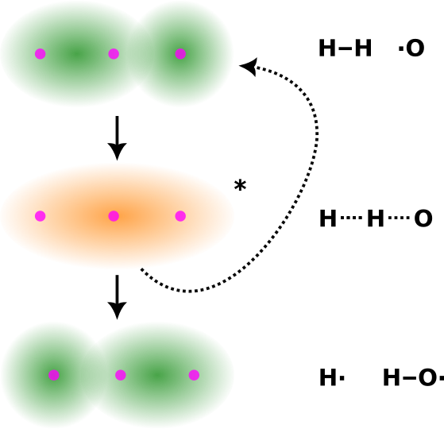
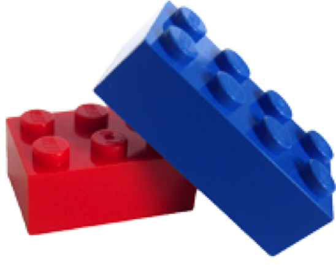

Eddig megtanultuk, hogy a körülöttünk levő anyagok milyen részecskékből állnak, ezek a részecskék hogyan kapcsolódhatnak egymással, és hogy ezekből a kapcsolatokból milyen tulajdonságok következnek. Most azt kezdjük el vizsgálni, hogy hogyan lesz az egyik anyagból a másik, az egyik részecskéből a másik
Ha meggyújtok egy gyufát, az égni fog. Ha valamilyen vas eszközt kint hagyok az esőben, előbb-utóbb teljesen el fog tűnni a rozsda miatt. Amikor a gyufa a dobozban van, ugyanúgy érintkezik oxigénnel, mégsem gyullad meg. Ha egy vas kanállal megkeverem a teámat, az nem rozsdásodik el, pedig érintkezik vízzel és oxigénnel is. Ahhoz, hogy az anyagok reagáljanak egymással, kell még valami... Mi kell ahhoz, hogy a gyufa el is égjen?
A gyufa égése teljesen új anyagokat hoz létre a fából és az oxigénből (meg persze a gyufa fején levő foszforból).
Hogyan lesz a anyagból c anyag? A kémiai reakciók az elektronszerkezet megváltozásával járnak. Tehát új kötések alakulnak ki. Nézzük most a hidrogén égését!
Ha hidrogént égetünk, víz keletkezik: 2 H2 + O2 → 2 H2O. Ha érdekel, ide kattintva megnézheted, hogyan néz ki ez a kémcsőben!
A vízmolekulában az oxigén egy-egy hidrogénnel alakít ki kötéseket. Ez működhet, ha atomok találkoznak, de a valóságban nem atomok találkoznak egy kémiai reakcióban. Ahhoz, hogy ezek a kötések kialakulhassanak, a korábbi kötéseknek először fel kell szakadniuk. Mivel a kötések azért jöttek létre, mert jobban megéri energetikailag, ha párosítva vannak (a megfelelő módon) az elektronok, mint ha párosítatlanok, a kötések felszakításához energiát kell felhasználnunk. Emelt szintű magyarázó ábrát itt találsz.

A lenti ábrán azt látod, hogy egy reakció alatt hogyan változik az energiaszint. Az y tengelyen az energia szerepel, ami természetesen felfelé nő. Szokás szerint ilyenkor mindig a reagáló anyagok szempontjából nézzük az energiaszinteket, vagyis a magasabb érték azt jelenti, hogy a rendszerben több az energia. A kattintható részek segítségével megnézheted, hogy mi történik a reakció során, és minek mi a jelentése. Válassz egy típust, és lépkedj végig a magyarázaton!
Képzeld el, hogy van két biliárdgolyód. Az egyikkel el kell találnod a másikat, és be kell löknöd a lyukba. Három dolog számít:
Egy másik példa, ha megfogsz két LEGO-kockát. Ha az azonos felüket nyomod össze, nem történik semmi. Ha viszont az ellenkező oldalukat közelíted, megfelelő erővel és jól forgatva, akkor az elemek összeállnak. Itt ez a példa a kémiai reakció. Itt is számít az energia, az irány és az orientáció.
Pirossal két "sikertelen ütközés" (az egyik minden szempontból rossz), feketével pedig egy "sikeres". A szaggatott vonalak a ciklámen golyó útját jelzik.

A kémia pontosan így működik. Nem mindegy, hogy milyen erővel ütköznek a részecskék, valamint, hogy melyik feleik találkoznak egymással. Két ionvegyület reakciójának modelljét látod a képen, egyszerűsítve. Ha az azonos töltésű részek ütköznek, akkor nem történik reakció az elektrosztatikus taszítás miatt, de ha az ellentétesek, akkor történhet. Ekkor már csak az energia a kérdés: elég erős-e az ütközés ahhoz, hogy a "biliárdgolyót belökje a lukba".
Három lehetséges ütközés poláris részecskék esetében. Csak a legfelső a sikeres, mert itt találkoznak az ellentétes töltések.
A nátrium-hidroxid és a hidrogénklorid reakciójában konyhasó és víz keletkezik. Egyenlettel leírva ez NaOH + HCl → NaCl + H2O. Itt az eddig létező molekulapályák helyett újaknak kell kialakulniuk. Ehhez az kell, hogy a részecskék úgy ütközzenek, ahogyan ki tudnak alakulni a molekulapályák köztük: a nátriumion a klórral, a hidroxidion a hidrogénnel.
A molekulák ütközésekor már két hatásos ütközést ábrázoltam. Az a hatástalan, amikor olyan részek találkoznak, amelyek közt nem alakulhat ki új moelkulapálya. A zöld a klórt, a szürke a nátriumot, a piros az oxigént, a körberajzolt pedig a hidrogéneket jelöli. A jobb oldalon a termékek (a konyhasó és a víz) csak egyszer szerepelnek.
Attól, hogy a megfelelő részek ütköznek egymással, még nem biztos, hogy tényleg történni fog valami. A fa folyamatosan találkozik oxigénnel, mégsem ég el (persze ennek más oka is van, de egyelőre elég ez a kép is). Ahogy már írtam, a korábbi kötéseket fel kell szakítani, ehhez pedig energia kell. Hogyan szerezhet energiát egy részecske? Mondjuk úgy, hogy gyorsabban mozog. A sikeres ütközéshez tehát az orientáció mellett az ütközés megfelelő energiája is kell. Kis energiánál egyszerűen lepattannak egymásról a részecskék, mert az elektronfelhők taszítása győz.
Emergens tulajdonságnak nevezzük azt, ami úgy jellemzője egy rendszernek, hogy az alkotóinak még nem az. Erre kiváló példa a hőmérséklet. Az egyes részecskéknek nincs hőmérséklete, nekik sebességük, mozgási energiájuk lehet. A sok részecske egyedi sebességének átlaga lesz számunkra a hőmérséklet. Ugyanilyen tulajdonság a halmazállapot is: egy vízmolekulának nincs ilyen tulajdonsága, de ha sokat összerakunk, akkor már fontos ezt is leírni. Az embereknél is léteznek ilyenek: például a társadalom sok szerepe és tulajdonsága, eredménye nem létezik akkor, ha csak egy embert vizsgálunk.
A hőmérséklet emelése minden reakciót gyorsít. Az endoterm reakcióknak természetesen jobban kedvez, ezért azokat jobban gyorsítja, de fontos, hogy az exotermet is gyorsítja. Csak azt kevésbé.
A reakciósebesség a hőmérséklet növelésével drasztikusan nő. De miért? Egy gázban vagy folyadékban a részecskék nem egyforma sebességgel mozognak. Van, amelyik szinte áll, és van, amelyik "szuperszonikus" sebességgel száguld. Ezt az eloszlást mutatja a Maxwell–Boltzmann-görbe. A csúszkán az abszolút hőmérsékletet látod kelvinben, ez a celsiusban mért hőmérsékletnél 273,15-tel nagyobb.
Beszéltünk a hatásos ütközésekről, a hőmérséklet szerepéről, és említettem az aktivált komplexet. Az aktivált komplex a legmagasabb energiájú állapot. A magas energia azt jelenti, hogy az állapot nem stabil, spontán átalakul. Olyan ez, mint egy hegy teteje, ahonnan egy kő valamelyik irányba lefelé fog távozni. A hegy két oldalán egy-egy völgy van, ezek a kiindulási anyagokat és a termékeket jelentik. Ahhoz, hogy az egyik oldalról eljussunk a másikra, át kell menni a hegyen. A katalizátor abban segít, hogy a hegy tetejére könnyebben eljussunk. Ha ez így most annyira nem tiszta, akkor javaslom, hogy olvass vissza, és nézd meg az exo- és endoterm reakciók energiadiagramját katalizátor alkalmazásával és anélkül, ide kattintva!
A katalizátorok néhány tulajdonsága:
Egy konkrét példa következik a katalizátor alkalmazására a tüzelőanyag-cellákból. A szürke körök platina nanorészecskéket jelképeznek. Ezek nagyon apró platinaszemcsék. A fehér körökkel jelzett, két hidrogénből álló hidrogénmolekulák kapcsolatba lépnek ezekkel a platina nanorészecskékkel, és atomokra bomlanak. A kapcsolat gyenge, de ahhoz elég erős, hogy a hidrogénmolekulák felszakadjanak. A hidrogénatomokkal már könnyen reakcióba lép az oxigén, és víz keletkezhet.
Mi történt tehát? A magas energiájú állapot (atomos hidrogén) helyett egy köztes, alacsonyabb energiájú állapotot találtunk (gyengébben kötött hidrogénatomok). Emiatt az energia, amit fel kell használnunk, csökkent. Olyan ez, mint amikor a hegyi út helyett egy alagúton megyünk keresztül: sokkal kevesebb energia kell hozzá.